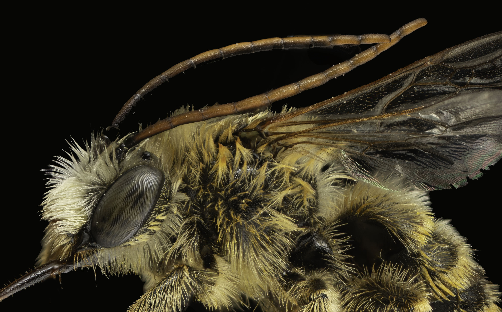

Perhaps the ideal way to identify bees is to hand off your specimens to a trained specialist, someone fluent in the complicated vocabulary of taxonomy. However, there are nowhere near enough experts to satisfy the demand, even if you have the budget. So most of us will have to work through keys and puzzle over tricky characters to arrive at an ID. With this resource, we aim to at least de-mystify the terminology. Also: we note that vocabulary and observation are linked: if you know half a dozen term describing surface sculpture, you will begin to see the details that distinguish them. Then, when you write your own taxonomic resources, you will provide more precise guidance to your own audience. My intent with this is to encourage readers to see themselves as taxonomists. Everyone starts puzzling over the terms, before they then start using those terms. Danger here: my own tendency to use too many words. An option: a link to a section with "author perspectives." Each of us is in our own way represent the audience - grad student, agency staff, non-profit organization.
Do we want to explain our process? 1) search for term in relation to bees; 2) write a consensus definition with comment on application in taxonomy; 3) look for images illustrating the term where it is most commonly applied; 4) some kind of review by us, or experts; 5) updates. Being transparent about this tells the user that mistakes will be made, and corrected.
This document will be forever in draft form, revised as we develop our own expertise, and find more and better examples. We invite your feedback. What have we missed? Where do we need more (or less) detail? Can you help us fill in content for underrepresented taxa?
Authors: David Cappaert, Sally Lent, Clare Maffei, Codey Mathis Alphabetical list. How to represent affiliations? Call this a DL resource, or USGS, or ??
Abcissa and Adventitious - two terms for which I find no applications in bee taxonomy.
Not a specific vein, but a description of a segment of a wing vein that is delimited by the intersection of other veins. E.g., if Main Street were a vein, one abscissa would be the stretch between 1st and 2nd.
abdomen
For insects in general, the third, posterior body region. For bees, wasps, and ants, there is a wrinkle: the apparent abdomen is properly called the metasoma, because the first abdominal segment is actually integral to the second body region, the mesosoma, or apparent thorax. Taxonomic literature typically uses the technical term: metasoma. DiscoverLife prefers the less precise but more commonly understood term: abdomen. In either scheme, tergites are numbered as shown in the image at right.
Metasoma and numbered tergae in yellow. For abdominal segments, the count would start at the posterior of the mesosoma, in red. Photo D. Cappaert
acarinarial fan
Acarinarial fan refers to the divergent pattern of appressed hairs on the anterior face of the first tergum of some Lasioglossum. This in contrast to erect hairs that may also be present.
View of anterior face of the first abdominal tergite of Lasioglossum (dialictus). Photo D. Cappaert.
acarinarium
A specialized anatomical structure which is evolved to facilitate the retention of mites on the body of an organism (Wikipedia). In bees, these stuctures may be internal or external, on either the abdomen or thorax.
Image from the Bee Mite ID page. Caption: Fig. 14. Phoretic deutonymphs of Anoetus (many, red arrows) and females of Imparipes (few, blue arrows) on sweat bee Halictus parallelus; photo by Lindsey Seastone & Laura Hartmann, ITP.
Acarinarium of Lasioglossum, a concave glabrous area on the anterior face of T1, on which mites reside. Fig 163, McGinley 1986.
Image from the Wikipedia page, which also discusses the host/mite relationship. In some cases, the entire anterior portion of the metasoma is hollowed out into an enormous internal chamber, entered through a small opening on the face of the first metasomal tergite, in which the mites can travel.
adventitious vein
A wing vein that is not homologized with a standard wing vein.
aedeagus
The reproductive organ of male insects. The aedeagus is specifically the intromittent part of the phallic apparatus since it contains the terminus of the genital exit tract (Snodgrass 1941).
I am not clear on aedeagus vs endophallus. Image here might help.
A paired, segmented sensory appendage of the head between the compound eyes, which consists of three segments having intrinsic muscles. Definition from Hymenoptera of the World.

The exceptional antennae of a male Melissodes. D. Cappaert
Antennae with segments indicated. Males have one more segment than females, as well as a shorter scape (1st segment). D. Cappaert
annulate
Furnished with or composed of rings. E.g., the visible segmentation of insect larvae.
arcuate
Smoothly rounded; shaped like a bow, or arch. E.g., the basal vein of a bee wing.
anterior
Situated near or towards the head. Possibly confusing: the legs of a mounted specimen are typically oriented with the anterior side facing downward.
apex / apical
Towards the end of a structure.
apodeme
Internal sclerite that serves as an attachment site for muscles. These may be formed from invaginations of the exoskeleton, externally visible as a pit or sulcus (groove).
appressed (hairs)
Hairs that lie flat to the integumental surface. Appressed hairs are often tomentose.
Areolate surface of Sphecodes male propodeum. D. Cappaert
arolium
A pad between the tarsal claws, present in most, but not all species. Among the megachilidae, the absence of an arolium is diagnostic of genus Megachile.
Left: tarsal claw with arolium (Melissodes). Right: Claw lacking arolium (Megachile). D. Cappaert
axilla
Sclerites on either side of the postero-lateral margin of the scutum. In most genera, these are functionally a portion of the scutellum, but are of scutal origin. In the parasitic genera, Coelioxys, Dioxys, and Triepeolus, the axillae are produced posteriorly as distinct spines, or teeth.
Axillary spines of Coelioxys. D. Cappaert
Triangular axillary spines of Epeolus interruptus (DiscoverLife)
Part of a structure nearest to its point of attachment to the body. E.g., the anterior edges of tergites. E.g., the "inside" mandibular teeth.
Basal hairbands distinguish Lasioglossum from Halictus. In the magnified image, note the blue pollen grains of Gilia.
Same feature. Abdominal hairbands are clearly beneath the apical edge of the previous segment.
basal vein
Forewing vein separating the radial and medial cells. For most taxa, the basal vein is straight (-ish) or gently curved. For Lasioglossum, and Halictidae in general, the vein is arcuate (arched).
Left: Lasioglossum: arcuate basal vein arising from the origin at a right angle (inset). Right: Hylaeus: curved but connection is less than a right angle. D. Cappaert.
basitarsus
The first and longest of 5 segments comprising the tarsus. The final segment is the distitarsus; the segments in between are the mediotarsi.
Foreleg of Osmia female. D. Cappaert.
Megachile males exhibit various modifications to the basitarsus. D. Cappaert.
basitibial plate
A small sclerite on the tibia at the juncture with the femur; like a kneecap.
A long basitibial plate is typical of the bright green halictids. D. Cappaert.
Except: Augorochloropsis. D. Cappaert.
bidentate
Having two teeth or two processes suggestive of teeth.
Bidentate mandible of a male Andrena. D. Cappaert.
Bidentate labral process of Andrena. D. Cappaert.
bifid (bilobed)
Forked; divided into two parts. Bilobed is roughly synonymous.
A narrow space in the surface of something; also a location in the field from which you will never recover your killing jar.
See also:
zzz
colors
In taxonomic treatments, the color of hairs, integument, and maculations is often described with a somehat cryptic technical vocabulary. The terms (e.g., ferrugineous) do not have precise definitions; rather, their meaning varies by taxon and taxonomist. The figure below suggests roughly how technical terms compare; see other glossary entries for specifics on each term.
A rainbow Anthophora, approximating the color range for technical terms. D. Cappert.
Further color examples, and an excuse to display a set of beautiful postal stamps featuring native bees. "Royal Mail commissioned research, which found that although 87% of respondents thought bees were important 53% could not name one type of bee." ((Design Week)
Yellow colors ochracous or flavous.
Tibial scopa pink, fulvous.
Metasoma fox-colered, rufous.
Integument black, piceous.
Metasoma ferrugineous, mesosoma testaceous.
condylar ridge
The ridge that runs from the lower basal attachment of the mandible, to the apex.
corbicula
A concave surface bounded by hairs, which functions to hold collected pollen. Most often referring to the structure on the hind tibia of apine bees; also called the "pollen basket." Corbicula can also refer to similar structures on the thorax of Andrena.
Pollen load on the hind tibial corbicula of a honeybee. D. Cappaert.
Corbicula of Bombus impatiens. D. Cappaert.
Andrena laden with pollen, carried both on tibial scopae and propodeal corbiculae. D. Cappaert.
coriaceous / coriarious
Leathery. Among bees, usually in reference to surface texture. Of course the texture of leather is not one thing, but depends on the source material and tanning process. As applied to bees, "finely reticulate" might be a rough synonym.
Our best approximation of standard for coriaceous.
Coriaceous integument of Lasioglossum tergum. D. Cappaert.
costal vein
The vein on the anterior margin of the forewing, proximal to the stigma - see wing. To our knowledge it is rarely significant in diagnosis.
coxa
The basal segment of the leg, it is perhaps better understood as the ventral attachment point for the articulating leg segments. The coxa is usually very difficult to see on a mounted specimen.
Anterior view of foreleg of Halictus farinosus. D. Cappaert.
A diagnostic feature from DiscoverLife key for Megachile male: stout hairs at base of forecoxal spines. D. Cappaert.
crenulate
Having a margin or contour with shallow, usually rounded notches and projections; finely notched or scalloped.
crista
A ridge or crest.
cuneate
Wedge-shaped; narrowly triangular, wider at the apex and tapering toward the base.
Cuneate tibia of Andrena (apex 1.5 times broader than basitarsus); alternatives are tibia parallel-sided, or apex narrower. D. Cappaert.
Describes a crossing (due to the shape of the Roman numeral for ten, an uppercase 'X'). For bees, a term that describes mandibles that extend past each other.
Indisputably decussate: Protosmia rubifloris. D. Cappaert.
NOT decussate: mandibles overlap, but the tips do not pass each other to form a cross. D. Cappaert.
depressed (area)
Where bees go when they just don't care anymore. Also, the apical (posterior) portion of a tergite, depressed relative to the anterior portion (which is also referred to as the disc).
The relative length of the T2 depressed area is a diagnostic character for Andrena and Lasioglossum. D. Cappaert.
In this Anthidium, the elevation change is less clear; however there is a distinct transition to the apical "depressed" area where the punctation is small and crowded.
distal
Situated farthest from the center, median line, or point of attachment or origin.
Describing a margin, such as the edge of an eye or sclerite, where the outline includes a concave section as if a part of the region had been "cut out" or displaced. (Wikipedia).
Emarginate clypeus of Megachile.
Emarginate T6 of Megachile.
endophallus
Description text
See also:
zzz
episternum
See mesepisternum.
See also:
zzz
epistomal suture
The suture that separates the top of the clypeus from the frons and gena.
Leg segment distal to the trochanter, proximal to the tibia.
Caption for Image 1
The curiously modified metafemora of select Ceratina.
ferrugineus
Color terms in taxonomic works are problematic, as their meanings vary by taxon and taxonomist. One place to start, for fulvous, is the Grammatical Dictionary of Botanical Latin which offers: the color of iron-rust, dark-red, rusty, light brown with a little mixture of red.
Reviewing the use of this term for bees suggests that tawny or dull orange are close. Either of those terms is more precise than "fulvous." Other better, more descriptive, everyday words that could be used: copper, brick-red, burgundy, chestnut,auburn, chestnut.
fimbria
A fancy word for fringe. Most often applied to the dense band of hairs at the apices of tergae 5 and 6 (T5, T6), the prepygidial and pygidial fimbria.
Fimbria apical to T5 and T6, dorsal view. Fig. 19, Michener 1994)
Fimbria associated with the labral process in Sphecodes and Nomia.
flagellum / flagellomere
The segments of the antenna distal to the scape and pedicel. A single segment is a flagellomere.
forewing
Description text
See also:
zzz
fossa
Description text
See also:
zzz
fovea
Generally, a pit or depression in a structure. In bees, facial fovea are distinct depressions in the integument medial to the eye. In Andrena these are covered with short appressed hairs. In other andrenids, Colletes, and Hylaeus the fovea are bare.
Fovea of Andrena. The color, depth, and shape of fovea are important diagnostic traits. Further examples here. D. Cappaert.
Hairless fovea of Panurginus. D. Cappaert.
Another kind of fovea, on T2 of Megachile rotundata. D. Cappaert
frons
Description text
See also:
zzz
fulvous
Color terms in taxonomic works are problematic, as their meanings vary by taxon and taxonomist. One place to start, for fulvous, is the Grammatical Dictionary of Botanical Latin which offers: tawny, 'dull yellow with a mixture of gray and brown' (Lindley), yellowish-brown (Stearn), dull yellowish-brown (S&D), lion-colored; 'deep yellow, reddish yellow, gold-colored, tawny;' (fungi) “reddish-cinnamon-brown; also tawny, reddish-yellow ; the color of lions; “tawny; dull yellow-brown” (Magill 1990).
Reviewing the use of this term for bees suggests that tawny or dull orange are close. Either of those terms is more precise than "fulvous." Other better, more descriptive, everyday words that could be used: amber, buff, golden-brown, caramel, apricot, and of course, "color of lions."
See also:
list
list
list
fuscous
Color terms in taxonomic works are problematic, as their meanings vary by taxon and taxonomist. One place to start, for fuscous, is the Grammatical Dictionary of Botanical Latin which offers: fuscous, a somber brown, "'brown tinged with greyish or blackish' (Lindley); “dusky [i.e. dark], too brown for a gray; the word is akin to furvus” (Jackson); grayish-brown (Fernald 1950); 'very dark blackish brown' (Dade), but often used to indicate darkness of color" (Stearn); classically 'dark-colored, dark, black, swarthy, dusky, tawny.
A reasonable guess is that fuscous is used comparitively. E.g., "black to fuscous pubescence" meaning that some hairs are browner than jet-black. There are probably better, more descriptive, everyday words that could be used. E.g., cocoa, walnut, chestnut, coffee, burnt sienna.
The width and shape of the gena are common as diagnostic traits. D. Cappaert
Megachile pugnata is distinctive for the genal "tooth." BIRL/USGS.
genital capsule
Description text
See also:
zzz
genitalia
Description text
See also:
zzz
glabrous
Bald, hairless, smooth, without hairs or sculpture. In image at right, the reflective surfaces are glabrous.
globular
Description text
See also:
zzz
glossa
The terminal section of the “tongue” of a bee, usually the longest structure in the middle of all other “tonguelooking” mouthparts (Identification of Bees in Southwest Idaho). The length of the glossa (and associated mouthparts) determines the range of flowers on which a bee can forage. Bees are referred to as short or long tongued; these categories are defined by the structure of the labial palps, and do not strictly correlate with the actual tongue length.
Mouthparts of a honeybee, a "long tongued" species. Modified from Spike Walker, Honeybee Biology.
Bombus consobrinus male. Image from Artsdatabanke. The page for this species includes a video of this bee foraging.
Orchid bee. Photo by João Vitor Oliveira de Souz from Encyclopedia of Life.
Head dimensions--length/width--are important in many keys and species diagnoses. Width is taken as the maximum distance across the eyes. Length (height) is typically measured from the top of the head (vertex) to the bottom of the clypeus. An alternative measure of height runs from the median ocellus to the bottom of the clypeus; this has been termed "face length." Face length will of course yield a smaller number for the length/width ratio, so it is critical to know when that metric is used.
By the conventional measure of head dimensions, the ratio for this Andrena is 0.86. D. Cappaert.
hemisternites
Description text
See also:
zzz
hind wing
Description text
See also:
zzz
humeral plate
Description text
See also:
zzz
hyaline
A fancy word for clear, colorless, transparent.
The hyaline wing of Colletes hyalinus.
Hyaline apical margins of T2 and T3, Lasioglossum hyalinum.
hyper-
Description text
See also:
zzz
hypo-
Description text
hypostomal carina
The ridge on the back of the head along the oral cavity that normally delimits the hypostoma from the postgena and occiput. (Hymenoptera of the World).
The height and curvature and/or modifications are traits in the DL Ceratina and Osmia keys.
gynandromorph
A bee (or other taxon) that is a hermaphrodite, frequently showing a bilateral division between male and female traits.
Lasioglossum hitchensi. The antenna on the left is female, with 12 segments. On the left, a 13-segmented male antenna. BIRL/USGS.
Agapostemon. Half of the clypeus (the front plate of the head) is male, half female (bilaterally) similarly one mandible is male and one female. The male has 6 tergites like the female, but the coloration is mostly male, which is brownish, but, interestingly there are some spots on the abdomen that are metallic green which is female.
A sclerotized plate found below the clypeus, either articulated there or fused to it .. often referred to as the “upper lip” based on the Latin origin of the term, it is considered an important element of insect food manipulation (Orr and Tripodi, 2017). The labral process is a basal elevated plate on the labral surface.
Position of the labrum between the mandible and clypeus.
Position of the labral process realtive to the labrum.
labrum
Description text
See also:
zzz
lacinia
A small lobe or scale at the base of the galea on the anterior margin of
the maxilla.
In Apis the laciniae function, along with the epipharynx, to close over the basal
part of the food channel so that when the proboscis is partly folded the bee can
draw nectar basad, up the anterior surface of the labiomaxillary tube to the mouth,
which is at the base of that surface of the labiomaxillary tube beneath the epi
pharynx (Snodgrass, 1956). Excerpt and image from Michener, Charles D., and Les Greenberg. “The Fate of the Lacinia in the Halictidae and Oxaeidae (Hymenoptera-Apoidea).” Journal of the Kansas Entomological Society, vol. 58, no. 1, 1985, pp. 137–41.
See also:
zzz
lancet
Description text
See also:
zzz
lateral
Description text
See also:
zzz
lateral lobe
Description text
See also:
zzz
lineolate
Longitudinally marked with very fine raised or depressed lines.
The area between the bottom of the compound eye and the top of the mandible. Malar space is an important trait for Bombus. From Bumblebees of Montana: One of the most challenging characters used to key out bumble bees is the length of the malar space (i.e. cheek) compared to its width. The length of the cheek is measured from the lower margin of the compound eye to the attachment of the mandible. The width of the cheek is measured below the compound eye and is the distance from the margin of the gena to the margin of the clypeus.
Bombus: malar space length ~ width.
Andrena: malar space 1/6 as long as wide.
malar space
Description text
See also:
Mandible
The paired apendages with which bees feed, defend themselves, and manipulate other mouthparts. Female mandibles typically differ in structure, as they are instrumental in collecting and preparing nest materials.
The number of teeth is often an important character in keys. Anthidium species have from 4 to 8 mandibular teeth. D. Cappaert.
The dimensions and structure of teeth are important characters in keys for Osmia. D. Cappaert.
For Osmia, the orientation and sizes of the (lower) condylar and (medial) outer ridges are important traits. D. Cappaert.
marginal cell
Forewing cell between the costa and submarginal cells.
maxilla
Description text
maxillary palpus
Description text
mentum
Description text
See also:
zzz
mesepimeron
Description text
See also:
zzz
mesepisternum
Description text
See also:
zzz
mesonotum
Description text
See also:
zzz
metallic
Descriptive of integument color that is reflective, suggestive of the shininess of metal. Metallic colors are most often a shade of green, blue, or gold, and vary in intensity from "slightly/faintly metallic" to "brilliant." A condition of "slightly" metallic can be hard to discern. In the images at right, an observer ID'd the metallic example only when presented with the dark standard.
Dark vs slightly metallic tergae. D. Cappaert.
Integument described as "dull metallic," to distinguish from the "brilliant" condition in photo below. D. Cappaert.
A "brilliantly metallic" Osmia. D. Cappaert.
A metallic species of Andrena. D. Cappaert.
Augorochlora is a common reference for the condition of "brilliantly metallic." D. Cappaert.
Brilliant-to-iridescent coloration of the orchid bee.
metanotum
Description text
See also:
zzz
metapostnotum
Description text
See also:
zzz
metasoma
The posterior region of the body of a bee. This region is sometimes conveniently referred to as the "abdomen," but metasoma is the correct term in apocritan hymenoptera (ants, bees, and wasps). (See definition of abdomen). Each segment of the metasoma includes a dorsal tergite, and a ventral sternite.
Next piece from https://www.museumoftheearth.org/bees/biology, which also has an excellent drawing. We might want to refer each mouthpart to an entry here for "mouthparts."
microsculpture
A search on "microsculpture" and "bee" does not locate a rigorus definition. It does lead you to THE INSECT PORTRAITS OF LEVON BISS, worth seeing. The term microsculpture refers to superficial etching of the integument. This is often referenced in contrast to smooth or more strongly sculptured surface. E.g. T2 surface shining, without tessellation or other microsculpture between the punctures.
A set of three simple eyes on top of the head. Useful in taxonomy as reference points, and as a measure, e.g., Lateral ocellus 2 ocellar diameters from back of head. Useful to bees for one or more hypothesized functions, including flight stabilization, circadian entraining, and polarization sensors (Wikipedia).
There is no prize for identifying the species. But cool if you can.
ocellus
Description text
See also:
zzz
ochraceous
Color terms in taxonomic works are problematic, as their meanings vary by taxon and taxonomist. One place to start, for ochraceous, is the the Grammatical Dictionary of Botanical Latin which offer ochre-yellow, yellowish-brown; “ochre color; yellow, imperceptibly changing to brown” (Lindley) “ochre-colored, yellow with a tinge of red” (Jackson); (bryology) “ochre-colored, brownish yellow” (Magill 1990); (in fungi) “ochre-yellowish; ochre-colored.
A reasonable guess is that ochraceous is straw-yellow-ish. There are probably better, more descriptive, everyday words that could be used. E.g., straw, lemon, copper, tawny, honey, ginger, greenish mold-on-white bread.
Color terms in taxonomic works are problematic, as their meanings vary by taxon and taxonomist. One place to start, for ochraceous, is the the Grammatical Dictionary of Botanical Latin which offer ochre-yellow, yellowish-brown; “ochre color; yellow, imperceptibly changing to brown” (Lindley) “ochre-colored, yellow with a tinge of red” (Jackson); (bryology) “ochre-colored, brownish yellow” (Magill 1990); (in fungi) “ochre-yellowish; ochre-colored.
A reasonable guess is that ochraceous is straw-yellow-ish. There are probably better, more descriptive, everyday words that could be used. E.g., straw, lemon, copper, tawny, honey, ginger, greenish mold-on-white bread.
he parapsidal line is a useful landmark; keys will often refer to pits and sculpturing lateral or medial to the line. D. Cappaert.
A less distinct parapsidal line, but it is linear, which distinguishes a Hoplitis from Osmia. D. Cappaert.
Osmia have a punctiform "line" that is nearly invisible. D. Cappaert.
penicillum
One or more short rows of long curved bristles on the outer
side of the apex of the tibia, a structure unique to the Meliponinae. Stingless bees transfer pollen from the middle leg to the
hind leg of the same side by pulling the former through the space between the penicillum and the base of the hind basitarsus. Because of the curvature of the penicillum, such movement apparently pushes pollen up into the corbicula
(observations of Trigona pallida by the authors). Dual origin of highly social behavior among bees, Winston and Michener1977.
As with other technical color terms, interpretations vary. Bugguide: glossy black or glossy brownish-black, i.e., "pitch black" or "pitch brown". Jardine describes this color as "black with a greenish tint; the color of pitch". Gordh (1) says piceous means "pitchy black; black with a reddish tinge".
Integument as piceous as it is possible to get. BIRL/USGS.
plumose
Description text
See also:
zzz
postgena
Description text
See also:
zzz
preapical carina
Description text
See also:
zzz
prementum
Description text
See also:
zzz
preoccipital carina
Description text
See also:
zzz
preoccipital ridge
Description text
See also:
zzz
prestigma
Description text
See also:
zzz
pronotal angle
Description text
See also:
zzz
pronotal lobe
pronotal lobe The rounded posterolateral extension of the pronotum covering the mesothoracic spiracle. Definition: Hymenoptera of the World.
Source: Hymenoptera of the World
Some species (e.g., Ceratina, Anthidium) helpfully display a colored patch on the pronotal lobe. D. Cappaert.
The upper surface of the propodeum, often delineated by dorsal or lateral ridges (carinae) that form an enclosure.
The details of sculpturing are particularly important in diagnosis of Lasioglossum - see examples. D. Cappaert
Propodeal triangle of Andrena. More on the Andrena propodeum here. D. Cappaert
protuberant
Description text
See also:
zzz
Pseudopygidial area
An expanded median area extends along the posterior margin on the fifth metasomal tergum of the female
and the sixth metasomal tergum of the male of some
genera, resembling a pygidial area on the apical tergum (BEM).
DiscoverLife.
Description text
See also:
zzz
pubescence
Description text
See also:
zzz
punctate
A puncture is a pit. Punctate denotes a field of punctures. Punctation is the particular pattern of puncture distribution. Punctures can be described as large or small; deep or shallow; sparse or dense (crowded). These qualitative descriptors require interpretation which may vary with taxon. Puncture distribution is often (helpfully) quantified, as the ratio of interspace distance (i) to puncture diameter (d) (see photos at right). Descriptions of punctation often also refer to the texture of the interspaces -- polished (glabrous) or roughened (aka microsculptured or tesselate).
i = interspace; d = pit diameter
i = 1.5 to 2.0d
(Lasioglossum scutum)
The pygidium is the modified dorsal area metasoma segment 6 (female) or 7 (male). The pygidial plate is the v- or u-shaped are of the pygidium, which functions as a sort of spatula used by females in nest building (the plate of males is sometimes reduced, and likely nonfunctional).
Drawing adapted from BEM
Among female Andrena, the form of the pygidial plate is a diagnostic clue. The example here has a raised, triangular central area.
r-vein The forewing vein that connects to the stigma, between the first submarginal and marginal cells. The length of this vein is a diagnostic character in Andrena keys.
A long r-vein: 4 times longer than wide.
A short r-vein: much less than 4 times longer than wide.
See also:
rachis
The main axis of a compound structure ... better explained with reference to the usual usage: the shaft of a bird feather. For bees, rachis usually refers to the tibial spur, upon which there may be teeth.
Lasioglossum glabiventre: rachis ~ basal tooth, vs L. buccale: rachis < basal tooth.
radicle
Description text
See also:
zzz
rastellum
Description text
See also:
zzz
recumbent
Description text
See also:
zzz
recurrent veins
There are 2 recurrent veins. Recurrent 1 (= 1st m-cu crossvein) is distal to the medial cell 1. Recurrent 2 (= 2nd m-cu crossvein) is distal to the medial cell 2.
The S-shaped 2nd recurrent is diagnostic for Colletes.
The position of the junction of the 1st recurrent vein and submarginal cell is a useful character for Andrena. In this case, the junction is at 3/4 of the length of SMC 2.
reticulate
Description text
See also:
zzz
retracted
Description text
See also:
zzz
rufous/rufescent
tinged with red; reddish-brown or brownish-red, as of rust or oxidised iron (Wikipedia).
There are probably better, more descriptive, everyday words that could be used. E.g., cherry, chestnut, scarlet, blood-red, wine-colored.
The first, long segment of the antenna, proximal to the pedicel.
Nomada generally have impressive scapes. USGS image.
Caption for Image 2
sclerotized
Description text
See also:
zzz
scopa
Description text
See also:
zzz
scutellum
Description text
See also:
zzz
scutum
scutum (pl., scuta; adj., scutal) The anterior sclerite of a notum, in front of the scutellum. In Apocrita, the mesoscutum is functionally only the area in front of the transscutal articulation; the axilla, although morphologically part of the mesoscutum, is treated as separate (see also axilla). Definition and image (below) from Hymenoptera of the World.
Caption for image. Perhaps not needed here, so just a credit, Hymenoptera of the World
The scutum is largest sclerite dorsally on the thorax, anterior to the scutellum. The size, depth, and spacing of scutal pits are important in keys. D. Cappaert
See also:
parapsidal line
pits
tesselate
serrulate
Description text
See also:
zzz
sessile
Description text
See also:
zzz
shagreened
Googling will not find a clear definition for shagreened, as applied to bees. However the term is used liberally in the literature; the diagnosis for Andrena piperi uses "shagreen" 18 times. Like with many surface sculpture terms, the default resource is for ants: A glossary of surface sculpturing. The definition for shagreened there: covered with a closely set roughness, like the rough-surfaced horse leather termed shagreened; like shark leather.
cf., scabriculous. Another take: Discoverlife will use "granular" for shagreen.
A generic example - shagreened book binding.
Shagreened tergae of Andrena chlorogaster.
spatulate
Having a wide, blunt end.
Spatulate hairs on the tibia are diagnostic for Osmia nemoris. D. Cappaert
Figure from: A primer of host-plant specialization in bees. B) Foreleg of Centris neffi (Apidae) (Peru), an oil-collecting specialist from Calceolaria,Scrophulariaceae with modified setae on the basitarsus; (C). Closeup and frontal view of the same species, with the comb onthe left and the few giant spatulate setae on the right, in the middle the stout setae that may serve to open the floral oil-glands,the elaiophores (SEM image by Claus Rasmussen).
spiculate
Description text
See also:
zzz
spicules
Description text
See also:
zzz
spine
Description text
See also:
zzz
spiracle
Description text
See also:
zzz
spur
Projection from the tibia where it joins the basitarsus. There are typically paired (exception: honeybees). Diagnostic features include size, shape, and arrangement of teeth.
a) Regular spur teeth of Halictus farinosus; b) Teeth longer than width of rachis, Lasioglossum glabiventre; c) Curved, twisted spur of Andrena prunorum.
spur
Description text
See also:
zzz
squamose
Description text
See also:
zzz
sternum/sternites
The sclerites of the ventral side of the metasoma. There are usually six clearly visible sternites in males and females.
df
stigma
aka prostigma, or pterostigma. a pigmented/ thickened spot on the costal margin of the forewing, usually at the end of the radius (Greek, stigma= mark) (Exotic Bee ID). It is preceded (basally) by the usually narrower prestigma. Together these structures lend stability to the leading edge of the wing.
stylops
A genus of obligately endoparasitic insects in the family Stylopidae. Stylops larvae emerge from their host bee while the host gathers pollen from flowers. The larvae then attach to other bees in order to be carried back to the nest. At the nest, the Stylops larvae enter the bodies of bee larvae and develop along with their host. Adult males leave their hosts to mate with females, who remain inside their host and hatch their eggs there (Wikipedia). Fuller explanation: Stylopized, emasculated and zombified: the risks of visiting a flower
Andrena vaga male bee, with Stylops sp. mating on its abdomen. By Aiwok - Own work, CC BY-SA 3.0, https://commons.wikimedia.org/w/index.php?curid=14651831
sting
Description text
See also:
zzz
stipes
Description text
See also:
zzz
striate
Description text
subantennal suture
A vertical line--suture--that connects the antennal socket to the horizontal epistomal suture that defines the top of the clypeus.
Bees generally have a single subantennal suture. In the Andrenidae, there are two.
The two sutures of Panurginus (Andrenidae). This trait is diagnostic, but is often difficult to discern in the hairier Andrena.
subapical
Description text
See also:
zzz
subgenal coronet
Description text
See also:
zzz
submarginal cells
Cells of the forewing, below the marginal cell. Number (two or three), size, position, and connections are important diagnostic clues.
The part of the face that is bounded below by the top pf the clypeus, laterally by the subantennal sutures, and above by the antennal bases.
Density of pits, and surface texture of the supraclypeus are useful traits for Lasioglossum.
For two similar Halictus, the shape of the clypeus differentiates species.
suture
Description text
See also:
zzz
strigilis
An organ on the first tarsal joint of a bee' s fore leg, used to curry or clean the antennæ.Additional description from NATURAL HISTORY AND ECONOMY OF THE BEES: Indigenous to the British Isles. W. E. SHUCKARD, 1866....on the anterior tibiæ of all the bees, there is, within, a small velum, or sail, as it has been called; this is a small angular appendage affixed within the spur by its base. At the base of the palmæ of the same legs, and opposite the play of this velum, there is a deep sinus, or curved incision, the strigilis, called thus or the curry-comb, from the pecten, or comb of short stiff hair which fringes its edge. Upon this aperture the velum can act at the will of the insect, and combined they form a circular orifice. The object of this apparatus is to keep the antennæ clean, for the insect, when it wishes to cleanse one or the other of them, lays it within this sinus of the palma, and then, pressing the velum of the spur upon it, removes, by the combined action of the comb and the velum, all excrescences or soilure from it, and this process it repeats until satisfied with the cleanliness of the organ.
Components include the velum, which opposes the circular opening, and the spine.
Drawing from the British Bee Journal, 1878.
tegula
A small, scale-like sclerite covering the base of the fore wing, basal to the humeral plate.
Caption for Image 1
The shape of the tegula is key to differentiating Eucera and Melissodes.
tergite
Description text
See also:
zzz
tergum
Description text
See also:
zzz
tesselate
Impressed sculpturing with a pattern of repeated shapes that fit together closely without gaps or overlapping; resembling mosaic or tiles.
Tesselate scutum of Lasioglossum.
Scutum of Andrena.
thorax
Description text
See also:
zzz
tibia
The leg segment distal to the femur, articulating distally wiith the basitarsus.
Foreleg of Halictus
Foreleg of Halictus
The very interesting tibia of an orchid bee. Photo by Alejandro Santillana, "Insects Unlocked."
tibial spur
Description text
See also:
zzz
tomentum
Pubescence consisting of soft, entangled hairs pressed close to the surface of the integument (Wikipedia).
Tomentum on the face below the antenna, obscuring underlying integument.
Tomentum basolaterally on tergites. Also visible are the erect plumose hairs on T1, and simple dark setae on T2,
Tomentose, appressed hairs on posterior tergae of Lasioglossum. On the anterior face of T1, the hairs are appressed, but not tomentose.
tooth
Description text
See also:
zzz
torulus
Description text
See also:
zzz
triungulin
The mobile first instar larva of an insect that undergoes hypermetamorphosis. The term triungulin is technically applied only to the three-clawed (hence the name) planidia in the Meloidae--Blister Beetle . Sometimes the term is often used in a broader sense, meaning any similar mobile first-instar larva, i.e., planidium. Definition from Bugguide.
Trinungulins on Andrena USGS BIML
On this Andrena metasoma, two life stages of of thrips larvae called triungulins enter their host and develop inside it. Females will remain inside the host. When females are ready to breed, they will push their head and brood canal opening, which is located just behind their head, out between the host insect's sclerites (Wikipedia: Stylopidae
Meloid on Nomada.
trochanter
The leg segment distal to the coxa and proximal to the femur.
The rounded "corner" of the trochanter (below in pic) is a character for Ceratina males.
The area between the lateral ocelli and the back of the head.
Frontal view; dotted line is the anterior margin of the vertex.
The length of the vertex is often described as a multiple of "ocellar diameters,", median width of the center ocellus. In the image above, the vertex height (or length) is ~1 ocd.
In the image above, the vertex height (or length) is >2 ocd.
Every vein and cell of the wings of bees has a term (or two). Most of the diagnostically useful characters are on the forewing; these are listed in separate glossary entries
The Bees of the World 2nd Edition.Charles Duncan Michener, 2007. "A definitive reference by an acclaimed expert accounts for 1200 genera/subgenera and 16,000 species of bees in the world."
Hymenoptera of the World: An Identification Guide to Families. Goulet and Huber, 1993.
The Bee Genera of North and Central America. Michener, McGinley, Danforth. 1994.
USGS Native Bee Inventory and Monitoring Lab. Manager of DiscoverLife guides, and source for hi-resolution catalog of over 4500 photographs of bees, other insects, and plants.
Morphology and External Morphology, Oregon State University Agri Expt Stn, 1969.
Pollen Manipulation and Related Activities and Structures in Bees
of the Family Apidae.Michener et al 1978. "A definitive reference by an acclaimed expert accounts for 1200 genera/subgenera and 16,000 species of bees in the world."
Studies of Halictinae (Apoidea: Halictidae), I: Revision of New World Lasioglossum Curtis, RJ McGinley, 1986


 Some species (e.g., Ceratina, Anthidium) helpfully display a colored patch on the pronotal lobe. D. Cappaert.
Some species (e.g., Ceratina, Anthidium) helpfully display a colored patch on the pronotal lobe. D. Cappaert.


 A short r-vein: much less than 4 times longer than wide.
A short r-vein: much less than 4 times longer than wide. 


 The scutum is largest sclerite dorsally on the thorax, anterior to the scutellum. The size, depth, and spacing of scutal pits are important in keys. D. Cappaert
The scutum is largest sclerite dorsally on the thorax, anterior to the scutellum. The size, depth, and spacing of scutal pits are important in keys. D. Cappaert 


 The length of the vertex is often described as a multiple of "ocellar diameters,", median width of the center ocellus. In the image above, the vertex height (or length) is ~1 ocd.
The length of the vertex is often described as a multiple of "ocellar diameters,", median width of the center ocellus. In the image above, the vertex height (or length) is ~1 ocd. In the image above, the vertex height (or length) is >2 ocd.
In the image above, the vertex height (or length) is >2 ocd.

 Feature of Megachilidae: two submarginal cells.
Feature of Megachilidae: two submarginal cells.
 Feature of Halictidae: arched basal vein.
Feature of Halictidae: arched basal vein.
 Feature of Paunurginus: truncate marginal cell.
Feature of Paunurginus: truncate marginal cell.{kind=link}